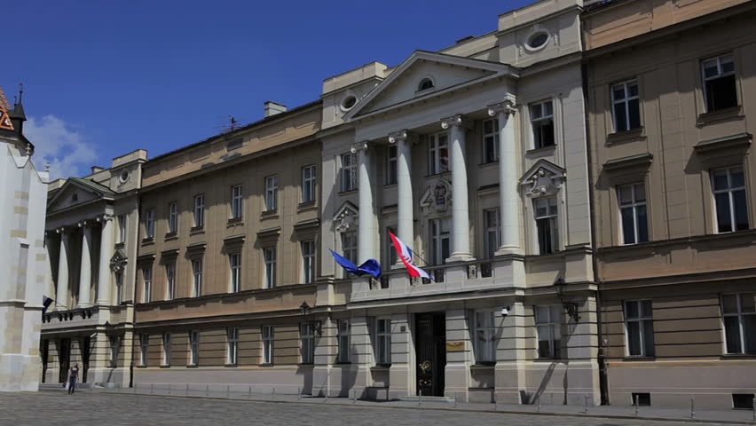

The politics of Croatia are defined by a parliamentary,
representative democratic republic framework, where the Prime
Minister of Croatia is the head of government in a multi-party system.
Executive power is exercised by the Government and the President of
Croatia. Legislative power is vested in the Croatian Parliament
(Croatian: Sabor). The Judiciary is independent of the executive and the
legislature. The parliament adopted the current Constitution of Croatia on
22 December 1990 and decided to declare independence from Yugoslavia on 25
May 1991. The Constitutional Decision on the Sovereignty and Independence of
the Republic of Croatia came into effect on 8 October 1991. The constitution
has since been amended several times. The first modern parties in the country
developed in the middle of the 19th century, and their agenda and appeal
changed, reflecting major social changes, such as the breakup of Austria-Hungary,
the Kingdom of Serbs, Croats and Slovenes, dictatorship and social upheavals in the
kingdom, World War II, the establishment of Communist rule and the
breakup of the SFR Yugoslavia.
Croatia is a unitary democratic parliamentary republic. Following the
collapse of the ruling Communist League, Croatia adopted a new constitution
in 1990 – which replaced the 1974 constitution adopted by the Socialist
Republic of Croatia – and organised its first multi-party elections.
While the 1990 constitution remains in force, it has been amended four
times since its adoption—in 1997, 2000, 2001 and 2010. Croatia
declared independence from Yugoslavia on 8 October 1991, which led to
the breakup of Yugoslavia. Croatia's status as a country was internationally
recognised by the United Nations in 1992. Under its 1990 constitution,
Croatia operated a semi-presidential system until 2000 when it switched to a
parliamentary system. Government powers in Croatia are divided into legislative,
executive and judiciary powers. The legal system of Croatia is civil law and,
along with the institutional framework, is strongly influenced by the legal heritage
of Austria-Hungary. By the time EU accession negotiations were completed on 30 June
2010, Croatian legislation was fully harmonised with the Community acquis. Croatia became
a member state of the European Union on 1 July 2013.
The President of the Republic (Croatian: Predsjednik/ica Republike)
is the head of state; he or she is directly elected and serves a five-year
term. The president is the commander in chief of the armed forces, has the
procedural duty of appointing the prime minister with the consent of the Sabor
(Parliament) through a majority vote (majority of all MPs), and has some influence
on foreign policy. The most recent presidential election was held on 11 January
2015 and was won by Kolinda Grabar-Kitarović. She took the oath of office on
15 February 2015. The constitution limits holders of the presidential office to
a maximum of two terms and prevents the president from being a member of any
political party. Consequently, the president-elect withdraws from party
membership before inauguration.
The Parliament of Croatia (Croatian: Sabor) is a unicameral
legislative body. A second chamber, the Chamber of Counties
(Croatian: Županijski dom), was set up in 1993 pursuant to the
1990 Constitution. The Chamber of Counties was originally composed
of three deputies from each of the twenty counties and the city of
Zagreb. However, as it had no practical power over the Chamber of
Representatives, it was abolished in 2001 and its powers were transferred
to the county governments. The number of Sabor representatives can vary
from 100 to 160; they are all elected by popular vote and serve four-year
terms. 140 members are elected in multi-seat constituencies, up to six members
are chosen by proportional representation to represent Croatians living abroad and
five members represent ethnic and national communities or minorities.
Croatia has a three-tiered, independent judicial system governed by the
constitution and national legislation enacted by the Sabor. The Supreme
Court (Croatian: Vrhovni sud) is the highest court of appeal in Croatia;
its hearings are open and judgments are made publicly, except in cases where
the privacy of the accused is to be protected. Judges are appointed by the
National Judicial Council and judicial office is permanent until seventy years
of age. The president of the Supreme Court is elected for a four-year term by
the Croatian Parliament at the proposal of the President of the Republic. As of
2017, the president of the Supreme Court is Đuro Sessa. The Supreme Court
has civil and criminal departments. The lower two levels of the three-tiered
judiciary consist of county courts and municipal courts. There are fifteen county
courts and sixty-seven municipal courts in the country.
Current office holders
| Office |
Name |
Party |
Since |
| President |
Kolinda Grabar-Kitarović |
Croatian Democratic Union |
19 February 2015 |
| Prime Minister |
Andrej Plenković |
Croatian Democratic Union |
19 October 2016 |
Latest Presidential Elections
| Candidates |
Party |
| Kolinda Grabar-Kitarović |
Croatian Democratic Union (Hrvatska demokratska zajednica) |
| Ivo Josipović |
Independent |
| Ivan Vilibor Sinčić |
Human Shield (Živi zid) |
| Milan Kujundžić |
Alliance for Croatia (Savez za Hrvatsku) |

Parliament of Croatia